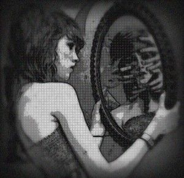

Kita ingin dilihat.
Bukan sekadar dilihat secara fisik, tetapi diakui keberadaannya.
Kita ingin seseorang mengetahui bahwa kita ada. Bahwa kita melakukan sesuatu. Bahwa kita berhasil. Bahwa kita penting.
Mungkin karena menjadi tidak terlihat adalah salah satu ketakutan paling sederhana yang dimiliki manusia.
Kita bisa mengatakan bahwa kita tidak peduli dengan pendapat orang lain.
Namun kemudian kita memeriksa siapa yang melihat unggahan kita.
Kita memperhatikan siapa yang menyukai sesuatu yang kita buat.
Kita mengingat komentar seseorang.
Kita membandingkan pencapaian kita dengan orang lain.
Dan tanpa sadar, kita mulai mengukur diri melalui mata mereka.
Sejak kecil, kita belajar bahwa menjadi “baik” sering kali berarti mendapatkan pengakuan.
Nilai yang bagus dipuji.
Prestasi dihargai.
Anak yang berperilaku baik mendapat perhatian.
Kita belajar bahwa sesuatu yang kita lakukan akan memiliki nilai lebih ketika orang lain melihatnya.
Kemudian kita tumbuh.
Dan pola itu tidak benar-benar hilang.
Ia hanya berubah bentuk.
Nilai berubah menjadi IPK.
Prestasi berubah menjadi jabatan.
Pujian berubah menjadi jumlah pengikut.
Keberhasilan berubah menjadi barang yang bisa diperlihatkan.
Kita hanya mengganti bentuk pengakuan.
Kebutuhannya tetap sama.
Dilihat.

Ada sesuatu yang aneh tentang manusia.
Kita tidak hanya ingin memiliki sesuatu.
Kita ingin orang lain tahu bahwa kita memilikinya.
Kita tidak hanya ingin berhasil.
Kita ingin keberhasilan itu terlihat.
Kita tidak hanya ingin bahagia.
Kita ingin kehidupan kita terlihat bahagia.
Mungkin karena bagi manusia, pengalaman pribadi terkadang terasa belum cukup nyata sampai mendapatkan pengakuan dari orang lain.
Kita hidup dengan dua kehidupan.
Satu yang benar-benar kita jalani.
Dan satu lagi yang kita tampilkan.
Masalahnya adalah ketika keduanya mulai sulit dibedakan.
Media sosial hanya membuat semuanya menjadi lebih jelas.
Kita memilih foto yang akan menunjukkan sisi terbaik kita.
Memilih kata-kata yang menggambarkan siapa kita ingin terlihat.
Menyembunyikan kegagalan.
Mengabadikan keberhasilan.
Lalu melihat kehidupan orang lain dan bertanya mengapa kehidupan kita tidak terlihat seperti itu.
Kita membandingkan kehidupan nyata kita dengan potongan kehidupan orang lain yang telah mereka pilih untuk ditampilkan.
Dan tetap saja kita merasa kalah.
Lucunya, mungkin orang yang kita jadikan pembanding juga sedang melakukan hal yang sama.
Dua manusia yang sama-sama merasa kurang.
Saling melihat kehidupan yang telah dikurasi.
Lalu sama-sama mengira bahwa orang lain memiliki sesuatu yang tidak mereka miliki.
Tetapi kebutuhan untuk dilihat tidak selalu datang dari kesombongan.
Kadang ia datang dari ketakutan.
Takut dilupakan.
Takut tidak dianggap.
Takut tidak cukup.
Takut menjadi seseorang yang hidupnya tidak meninggalkan bekas apa pun.
Mungkin sebagian dari ambisi manusia berasal dari ketakutan tersebut.
Kita ingin mencapai sesuatu agar keberadaan kita memiliki bukti.
Sebuah gelar.
Sebuah pekerjaan.
Sebuah karya.
Sebuah nama.
Sesuatu yang bisa berkata:
Aku pernah ada di sini.
Namun jika seluruh pengakuan itu dihilangkan, apa yang tersisa?
Jika tidak ada yang melihat pekerjaan kita.
Jika tidak ada yang memuji pencapaian kita.
Jika tidak ada yang mengetahui apa yang kita miliki.
Jika tidak ada yang bisa kita buktikan.
Apakah kita masih menginginkan semua itu?
Pertanyaan ini mungkin lebih sulit daripada yang terlihat.
Karena mungkin kita tidak pernah benar-benar mengetahui mana keinginan yang berasal dari diri sendiri dan mana yang tumbuh dari keinginan untuk diterima.
Kita mengatakan:
“Aku ingin sukses.”
Tetapi mungkin yang sebenarnya kita inginkan adalah dihormati.
“Aku ingin kaya.”
Tetapi mungkin yang kita cari adalah rasa aman.
“Aku ingin dikenal.”
Tetapi mungkin yang kita takutkan adalah menjadi tidak berarti.
Keinginan manusia jarang sesederhana bentuk luarnya.
Pada akhirnya, kita semua ingin dilihat.
Tetapi mungkin yang lebih penting adalah menemukan seseorang yang tetap mengenali kita ketika tidak ada lagi yang perlu ditampilkan.
Dan mungkin orang itu harus terlebih dahulu adalah diri kita sendiri.
Karena ada kemungkinan paling menyedihkan dalam kebutuhan manusia untuk dilihat:
Kita begitu sibuk menunjukkan kepada dunia siapa diri kita,
sampai lupa mencari tahu siapa diri kita ketika tidak ada seorang pun yang melihat.
Jadi mungkin pertanyaannya bukan lagi,
“Apakah orang lain melihatku?”
Tetapi:
“Jika seluruh dunia berhenti melihat, apakah aku masih tahu siapa diriku?”